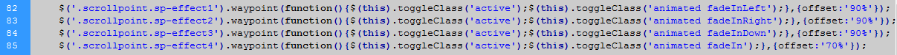
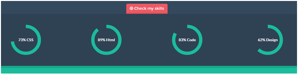
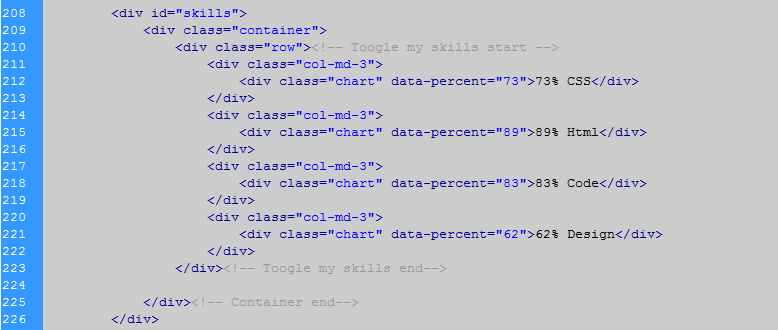

Freelancer Template
This is the theme help documentation file. Please search this before contacting for support. Note: We do not support theme customizations beyond it's original functionality & appearance.
Live Demo Contact Us1. Getting started
We really appreciate that you bought our template. We hope that it will be serves you well. If your like our template just let us now or you can stay in touch with us through facebook or twitter. It would be great if you recomended us to your friends and colleagues. If you have some questions just send a message we are looking forward to your emails.
Your Pixelized team.2. Feedback
Like our work? Have some problem? Drop us line. We really like to hear about you. Especially we like to see your websites builded on our theme. Don't be shy and send us link to your branded new websites. The best sites we will posted on our Facebook or twitter if you give us your permission. Nothing is better feel than see our theme on working site.
Facebook Twitter3. Plugins
- 3.1 Bootstrap Validation
- 3.2 Font-awesome
- 3.3 Animate
- 3.4 Creative brands
- 3.5 Easy Pie Chart
- 3.6 Modernizr
- 3.7 Waypoints
- 3.8 Vertical Carousel
- 3.9 CountTo
- 3.10 PHP mailer
3.1 Bootstrap Validation
This plugin checks correctly entered data into the contact form. Until all data are correctly entered into the contact form will not be sent. If you send the form and if any data is not filled or filled incorrectly, contact form displays a warning message.
For full documentation how to customize this plugin go to Bootstrap Validation
3.2 Font Awesome
It’s one of the most powerfull tools. Font Awesome gives you scalable vector icons that can instantly be customized — size, color, drop shadow, and anything that can be done with the power of CSS. Let’s take a look. In the index on the „My latest work“ section you can find four icons on the left. This is a font awesome so let’s say we wanna change them to more suitable for your purposes. Open the index.html in some editor and find the line number 325.

Here you can change appearance of this icon just simply remove class „fa-puzzle-piece“ and type for instance „fa-money“. Now save the changes and refresh the index.html page and icon is different.
For full documentation how to customize this plugin (size, color, rotation etc.) and full list of different types of icons go to fontawesome.io
3.3 Animate
It is awesome CSS3 plugin which allows us to animated individual parts of our themes. Example is best so in the index page you can seen rounded image. When you refresh the page this object is slightly slide in down if you want to change this effect simply. If you don’t want this effects just simple open index.html in some editor and remove all classes sp-effect1, sp-effect2, sp-effect3, sp-effect4
In this scheme we combine animate with waypoint plugin so if you want to change this effect open custom.js file and edit lines following lines. Insted of „fadeInLeft“ just simply try another effect eg. „bounceIn“
{kind=link}
For full documentation and list of different types of animations go to http://daneden.me/animate
3.4 Creative Brands
It’s css add-on more than plugin. This add-on edits appereance of logos social sites in the footer. For more brands.pixelized.cz
3.5 Easy Pie Chart
This plugin allows us simple circle loading. On this you can show your skills. You can find this plugin by clicking on the button „check my skills“ in second „about“ section.
{kind=link}
If you want change percentages of this pie charts open index.html in some editor and find following lines.
{kind=link}
Change percentage asi you like by edit data-percent=“73“ to anything else. Then edit description 73% CSS to whatever you want save changes and it is done.
For more informations go to: https://developers.google.com/maps/documentation/javascript/examples/map-simple
3.6 Modernizr
This plugin is used in „references“ section in hover effect on every each reference image. For full documentation go to http://modernizr.com/docs/
3.7 Waypoints
You can see this plugin when you scrolling down the page and each section is showing when you scroll there. If you want to remove this effects you have to open index.html in some editor and remove all classes „scrollpoint“ and classes „sp-effect4“ „sp-effect3“ „sp-effect2“ „sp-effect1“.
For full documentation of this plugin go to https://github.com/imakewebthings/jquery-waypoints/
3.8 Vertical Carousel
This plugin we use in the very first section to changing text.
{kind=link}
For full documentation go to https://github.com/tutorialdrive/Bootstrap-Vertical-Thumbnail-Carousel
3.9 jQuery CountTo
This plugin allows us visualize counting to some number. You can see this plugin under "what i do" section.

You can easily customizing it by following this steps.
- Go to line 285
- Edit atributes data-from, data-to, data-refresh-interval to values that fits to your purposes.
Full documentation you can check here github.com/mhuggins/jquery-countTo
3.10 PHP mailer
We prepared for you send.php file. This is only example how to use php mailer plugin for sending email through contact form. Only thing you have to do is download that phpmailer plugin from here. For full documentation check php mailer.
4. FAQ
If I buy an Single application license, can I remove your Copyright-Line?
Yes, in any kind of license you definitely can remove copyright. But if you like our work you can place there just "created by pixelized" it is completely up to you.
How do i connect contact form with my email.
This is only html5, css3 & jQuery theme. There isn't any script to do it. You have to use some external script probably PHP or something. We are selling many of copies and everybody has slightly different requirement so we are not able to build single one script.
Nevertheless we have prepared for you little example how can look like PHP script for sending messages. For more informations check PHP mailer.
Can i use, images included in this theme?
In credits section you can find links to every image. So find image you want in credits and check licence on source page.
5. Credits
5. 1 Plugins
- Bootstrap Validation
- Font Awesome
- Animate
- Creative Brands
- Easy Pie Chart
- Modernizr
- Waypoints
- Vertical Carousel
- jQuery CountTo